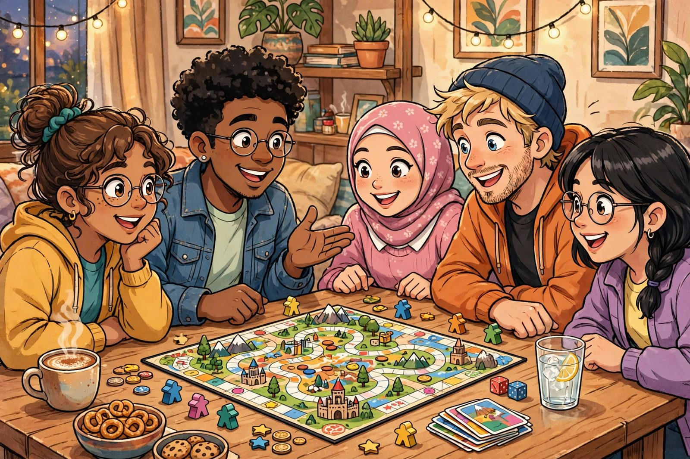

Gateway games, explained

Spend any time in board game circles and you'll hear the phrase "gateway game" sooner than later. It gets thrown around so much that it starts to sound like marketing. But it's actually one of the most useful concepts in the hobby — and understanding it will make you much better at picking games for mixed groups.
What a gateway game actually is
A gateway game is a game that serves as someone's gateway into the hobby: accessible enough for a first-timer, interesting enough to make them want a second game. The term describes a role a game plays, not a category printed on the box. A game becomes a gateway game when it successfully converts a non-gamer into someone who says, "Okay, what else is out there?"
That's why hobbyists talk about them constantly. Every group has a constant stream of potential new players — partners, friends, coworkers, family — and the health of the hobby depends on those first experiences going well. A good gateway game is a social tool: it meets people where they are and shows them that modern board games are nothing like the ones they remember from childhood.
The anatomy of a good gateway game
Gateway games share a handful of traits, and once you know them, you can spot a gateway candidate in any lineup:
Teachable in about five minutes. The rules fit in a short explanation. If the teacher has to keep saying "don't worry about that part for now," the game isn't doing the teaching work — the teacher is. A real gateway game's core loop should be graspable almost immediately.
Decisions feel meaningful from turn one. New players need to feel like their choices matter, even before they understand strategy. The worst introduction is a game where a beginner's decisions are obviously irrelevant until they've played five times. A good gateway game lets a newbie make a real choice on the first turn and feel clever about it by the third.
Theme does the heavy lifting. When the theme is intuitive — building something, exploring somewhere, outwitting someone — the rules feel like common sense instead of homework. "Claim routes on the map" needs less explanation than "optimize your action-efficiency engine," even if the decisions are comparable.
Losing doesn't feel terrible. This one is underrated. In a gateway game, coming in last still involves interesting moments. Games with brutal runaway-leader problems or player elimination are rough introductions, because the newest player is the most likely to fall behind early and check out mentally.
Plays in around an hour. Long enough to develop, short enough that a new player who isn't hooked doesn't resent the time. If the first session runs past the two-hour mark, you're asking a lot of someone who doesn't yet know why they're there.
Why gateway games are controversial (a little)
Here's the honest wrinkle: experienced gamers argue endlessly about which games count. Part of that is taste — everyone's gateway was different, and people are loyal to theirs. But there's also a real debate about whether some beloved "gateway" titles are actually good introductions. A game can be a masterpiece and still be a mediocre first game, and a game can be a perfect first game without being anyone's favorite.
There's also a lifecycle thing worth knowing. The games that work as gateways change slowly over time as tastes evolve. But the underlying formula barely moves: easy to teach, fun on the first play, friendly theme, forgiving of mistakes.
How to use the concept
If you're building a collection, you don't need many gateway games — two or three solid ones cover most situations. Pick them for variety: one that's social and interactive, one that's a bit more thinky, and maybe one cooperative game for groups where competition makes people tense. Keep them in the "new players" slot of your shelf, and retire them from that slot only when you've found something that teaches faster or plays better with beginners.
And if you're the one introducing a game: play to teach, not to win. The goal of a gateway session is a second session. Explaining strategy out loud, suggesting options on other players' turns, and deliberately not crushing a newbie are not patronizing — they're how you get someone to come back. The win is converting a skeptic, not the victory points.
Ready to shop for your own? Our first-game buying guide walks through matching a game to your specific group.